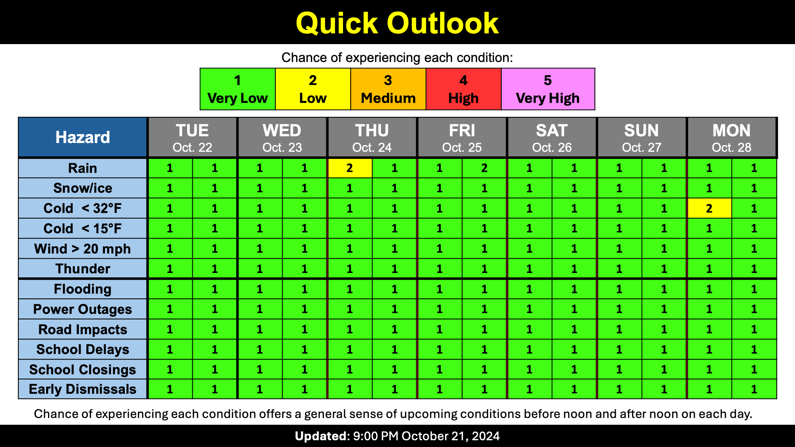

Warning: this is an old update that has been archived. This update is not current.
Sunny and Warm!
School Forecast
through Friday October 25th
Last updated: 10:00PM Monday October 21, 2024
| 0% (Nope) |
|---|
| 0% (Nope) |
|---|
| 0% (Nope) |
|---|
___________________
10:00PM Monday:
Our beautiful stretch of warm sunny weather continues. Today the temperature at the Dutchess County Airport across the river reached a record 82°F. This was one degree warmer than their previous record high temperature for October 21st, which was set in 1979. The temperature here in the Kingston area reached 80°F. Overall, today was the warmest day here in the Mid-Hudson Valley since September 19th.
The warm weather will continue for two more days. Tuesday and Wednesday will both be about as warm as today was. The Dutchess County airport will likely fall short of their record high temperature on Tuesday (85°F) but may come close to Wednesday's record of 78°F. A cold front will move through Wednesday evening increasing clouds overnight before bringing more seasonal temperatures back to the region.
Hopefully you can get outside and enjoy the warmer weather this week!
Next Update:
Thursday Night
-Ethan

KingstonSnows | Kingston, New York
Website built by Ethan Burwell